Mapa povrchů Helsinek (YLRE): bez ní (nahoře, modře) a s ní (dole, červeně)
Řez zleva (A) doprava (B), ±10 m podél ulice, 10 px = 1 m. Silné čáry = okraje vozovky, tenké = ostatní hranice, žlutá = střed řezu, * = odhad. Ortofoto © Helsingin kaupunki, kaupunkimittauspalvelut, 2026 (CC BY 4.0).
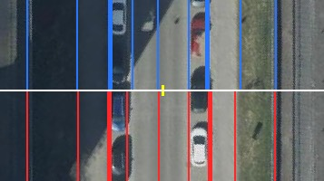
hk1 · Haartmaninkatu (helsinki)
bez mapy povrchů (odhad): zelen 5.5* · chodnik 3.65* · parkovani 2.47 · pruh 2.83 · pruh 3.37 · parkovani 1.93 · chodnik 3.8* · zelen 3.8*
s mapou povrchů YLRE: zelen 5.65* · chodnik 3.35 · parkovani 2 · pruh 3.55 · pruh 3.27 · parkovani 2.28 · chodnik 2.85 · zelen 4.3*
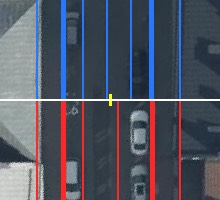
hk2 · Kalevankatu (helsinki)
bez mapy povrchů (odhad): chodnik 2.55* · parkovani 2 · pruh 2.4 · pruh 2.4 · parkovani 2 · chodnik 2.9*
s mapou povrchů YLRE: chodnik 2.6 · parkovani 2 · pruh 3.42 · pruh 3.42 · chodnik 2.8
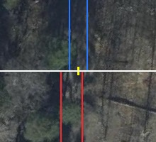
hk3 · (bez názvu) (helsinki)
bez mapy povrchů (odhad): stezka_sdilena 2.5*
s mapou povrchů YLRE: stezka_sdilena 3
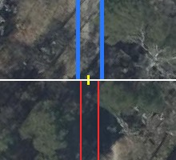
hk4 · Kansanpuistonpolku (helsinki)
bez mapy povrchů (odhad): pruh 3
s mapou povrchů YLRE: chodnik 2.2
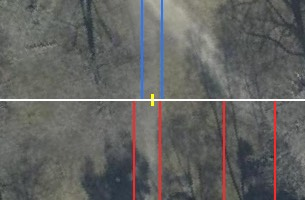
hk5 · (bez názvu) (helsinki)
bez mapy povrchů (odhad): chodnik 2*
s mapou povrchů YLRE: chodnik_kola 2.65 · zelen 6.4 · chodnik 5.05
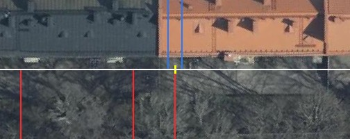
hk6 · (bez názvu) (helsinki)
bez mapy povrchů (odhad): chodnik 2*
s mapou povrchů YLRE: plocha 16.2* · chodnik 6*
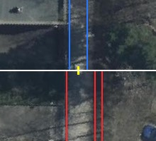
hk7 · Paulankatu (helsinki)
bez mapy povrchů (odhad): stezka_sdilena 2.5*
s mapou povrchů YLRE: stezka_sdilena 4 · plocha 1
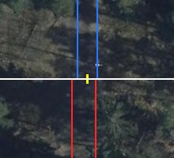
hk8 · (bez názvu) (helsinki)
bez mapy povrchů (odhad): stezka_sdilena 2.5*
s mapou povrchů YLRE: stezka_sdilena 3
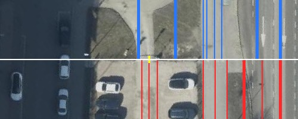
hk10 · (bez názvu) (helsinki)
bez mapy povrchů (odhad): obsluzna 6.2* · zelen 4.7* · chodnik 0.6* · cyklostezka 1.28* · cyklostezka 1.28* · plocha 5.9* · pruh 3.87
s mapou povrchů YLRE: plocha 1.15* · nezname 1.4* · zelen 7.7* · stezka_sdilena 2 · cyklostezka 2 · plocha 2.85 · pruh 3.04 · pruh 3.04
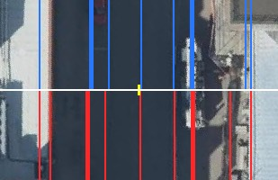
hk11 · Työpajankatu (helsinki)
bez mapy povrchů (odhad): chodnik 5.7* · parkovani 2 · pruh 3.6 · pruh 3.6 · parkovani 2 · chodnik 6* · plocha 0.55*
s mapou povrchů YLRE: plocha 1.2* · chodnik 4.1 · parkovani 2 · pruh 3.85 · pruh 3.85 · parkovani 2 · chodnik 4.2 · plocha 2.25*
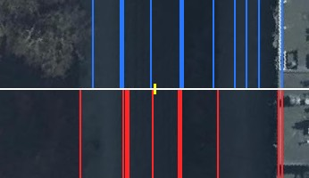
hk12 · Radanrakentajantie (helsinki)
bez mapy povrchů (odhad): chodnik 3.2* · tramvaj_v_pruhu 3.35 · tramvaj_v_pruhu 3.35 · zelen 3.6* · chodnik 2.4* · cyklostezka 1.35* · cyklostezka 1.35* · plocha 2.6*
s mapou povrchů YLRE: chodnik 4.75 · plocha 0.4 · tramvaj_v_pruhu 2.97 · tramvaj_v_pruhu 2.97 · zelen 4.25 · stezka_sdilena 6.8 · plocha 0.4*
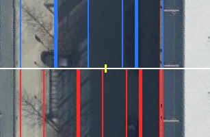
hk14 · Sörnäistenkatu (helsinki)
bez mapy povrchů (odhad): chodnik 5.05* · pruh 4.9 · pruh 4.9 · parkovani 2 · chodnik 3.9*
s mapou povrchů YLRE: chodnik 3.45 · plocha 4.95* · pruh 3.55 · pruh 3.55 · parkovani 2 · chodnik 2.95 · nezname 0.3*
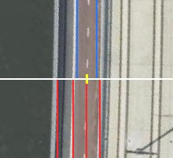
hk16 · Kruunuvuorensilta (helsinki)
bez mapy povrchů (odhad): cyklostezka 2.5*
s mapou povrchů YLRE: chodnik 2 · cyklostezka 1.73 · cyklostezka 1.73
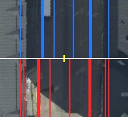
hk17 · Uudenmaankatu (helsinki)
bez mapy povrchů (odhad): chodnik 3.8* · parkovani 2 · pruh 3.27 · pruh 2.93 · chodnik 3.2*
s mapou povrchů YLRE: plocha 0.65* · chodnik 2.5 · parkovani 2 · pruh 3.4 · pruh 3.4 · chodnik 2.7 · plocha 0.55*
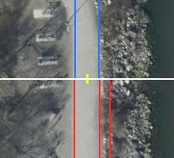
hk18 · (bez názvu) (helsinki)
bez mapy povrchů (odhad): chodnik 3
s mapou povrchů YLRE: chodnik_kola 3.15 · zelen 1.35*
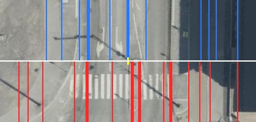
hk20 · Koksikatu (helsinki)
bez mapy povrchů (odhad): chodnik 2.5* · plocha 2.9* · cyklostezka 1.37 · pruh 3.6 · pruh 2.93 · nastupiste 3 · plocha 9* · cyklostezka 1.25* · cyklostezka 1.25* · plocha 3.45*
s mapou povrchů YLRE: plocha 1.5 · nezname 2.4* · chodnik 5.25 · cyklostezka 1.95 · pruh 4.21 · pruh 3.23 · delici 1.25 · pruh 4 · krajnice 1.1* · nastupiste 3 · cyklostezka 1.73 · cyklostezka 1.73 · plocha 4.45*
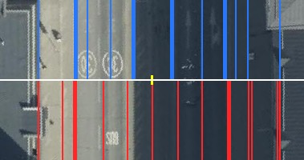
hk21 · Hämeentie (helsinki)
bez mapy povrchů (odhad): chodnik 4.6* · cyklopruh 1.5 · bus 2.85 · pruh 2.85 · tramvaj 4.8* · pruh 3.77 · pruh 2.83 · chodnik 1.35* · cyklostezka 1.5* · chodnik 4*
s mapou povrchů YLRE: chodnik 2.95 · cyklostezka 1.5 · pruh 3.62 · pruh 3 · tramvaj_pruh 3.07 · tramvaj_pruh 3.21 · pruh 3.02 · pruh 3.32 · cyklostezka 2.45 · plocha 0.45 · chodnik 3.15 · nezname 0.3*
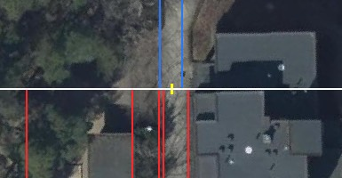
hk23 · Susannanpenger (helsinki)
bez mapy povrchů (odhad): stezka_sdilena 2.5*
s mapou povrchů YLRE: plocha 11.9 · zelen 2.95 · plocha 0.5 · stezka_sdilena 2.85
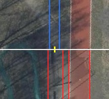
hk25 · (bez názvu) (helsinki)
bez mapy povrchů (odhad): chodnik 2*
s mapou povrchů YLRE: chodnik 3 · zelen 1.2 · plocha 4.15
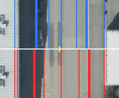
hk26 · Kolmas linja (helsinki)
bez mapy povrchů (odhad): chodnik 4.3* · parkovani 2.57 · pruh 2.53 · pruh 3.1 · parkovani 2 · chodnik 3.55*
s mapou povrchů YLRE: plocha 0.45* · chodnik 3.4 · parkovani 2 · pruh 3.55 · pruh 3.55 · parkovani 2 · chodnik 3.1
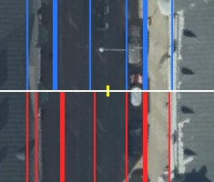
hk28 · Fredrikinkatu (helsinki)
bez mapy povrchů (odhad): chodnik 3.05* · tramvaj_v_pruhu 3.9 · tramvaj_v_pruhu 3.9 · parkovani 2 · chodnik 3.05*
s mapou povrchů YLRE: plocha 1.05* · chodnik 2.8 · tramvaj_v_pruhu 3.55 · tramvaj_v_pruhu 3.55 · parkovani 2 · chodnik 2.65
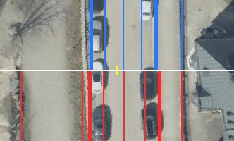
hk30 · Merikatu (helsinki)
bez mapy povrchů (odhad): parkovani 2 · pruh 2.6 · pruh 2.6 · parkovani 2 · chodnik 3.72*
s mapou povrchů YLRE: plocha 8.7 · zelen 1* · parkovani 2 · pruh 2.95 · pruh 2.95 · parkovani 2 · chodnik 3.22
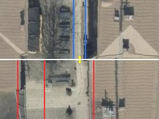
hk31 · (bez názvu) (helsinki)
bez mapy povrchů (odhad): chodnik 2*
s mapou povrchů YLRE: plocha 4.45* · chodnik 8.3*
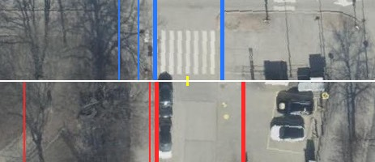
hk33 · (bez názvu) (helsinki)
bez mapy povrchů (odhad): nezname 2.4* · chodnik 2* · obsluzna 8.3*
s mapou povrchů YLRE: chodnik 15.47 · plocha 0.8 · obsluzna 10.75
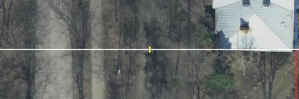
hk36 · (bez názvu) (helsinki)
bez mapy povrchů (odhad): zelen 8.96*
s mapou povrchů YLRE: plocha 8.96
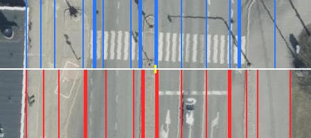
hk39 · Savonkatu (helsinki)
bez mapy povrchů (odhad): plocha 2.15* · cyklostezka 2* · chodnik 4.1* · plocha 1.6* · krajnice 1.3* · pruh 4 · krajnice 1.3* · delici 2.25* · pruh 3.73 · pruh 3.6 · pruh 3.4 · cyklopruh 1.33 · chodnik 5.15*
s mapou povrchů YLRE: chodnik 2.55 · cyklostezka 2.2 · plocha 3.75 · pruh 3.01 · pruh 4 · krajnice 1.29* · delici 2.05 · pruh 3.56 · pruh 3.6 · pruh 3.28 · cyklostezka 2.5 · plocha 1.65 · chodnik 4.65
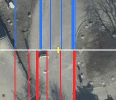
hk40 · Vilhonvuorenkuja (helsinki)
bez mapy povrchů (odhad): chodnik 5.1* · parkovani 2 · pruh 2.2 · pruh 2.2 · plocha 0.55*
s mapou povrchů YLRE: zelen 2.8 · chodnik 1.65 · parkovani 2 · pruh 2.65 · pruh 2.65